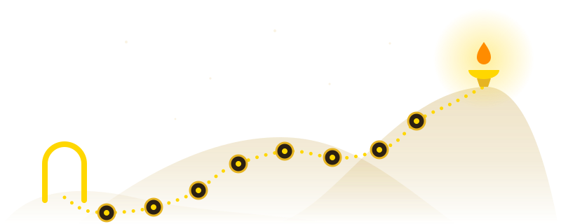

New to Buddhism? Start at zero.
Short stories. One idea at a time. Hard words explained one at a time. Nothing to lose if you miss one.
- Read a short story
- Try it for one minute
- Answer three short questions
How this works
- Each step is one short lesson.
- You collect points for the steps you finish.
- Points only count what you have done, and you cannot lose them.
Free. No sign-up. Your progress stays in this browser.
What this Trail left out
The Trail is a first walk. It is not the whole map. These 4 things were left out on purpose. The library has them.
- Rebirth (life after life) and other worlds
- The full life of the monks and nuns
- The eight steps, by name
- The different schools of Buddhism
These pages are harder reading. They are for later. You lose nothing by skipping them.
Every page on this site is open to everyone, at any time.
Start here
Made for beginners. No reading needed first.
The Trail
Short lessons that start at zero. Each one has a story, one idea and three short questions.
Begin here 8 worlds, 46 lessonsPlain-English Glossary
Hard words in plain words, with how to say each one. Flip a card to see what a word means.
Good at any timeWhen you are ready
Harder reading, in small pieces. The Trail links to these pages as you go.
Sutta Library
Notes on 67 old talks and poems. Each card opens with one plain sentence about what it says.
Best after World 1Modern Life topics
Old ideas put to work in life today. There are 14 topics, such as work, money, phones and family.
Best after World 2Journey to the West
A famous old story from China about a monkey and a long walk. It is read here in 14 episodes.
Best after World 3Deep study
The full library, for a long, slow read.
Curriculum
A study plan in four stages. Each stage names the old texts that go with it.
Guided Study
The library in reading order. There are nine units, with a box to tick for each reading.
Best after the TrailThe Canon: the full bookshelf of old texts
Every book on the old bookshelf, with a few lines on what is inside each one.
The 227 monks’ rules
Monks are men who leave home to train full time. Here is each of their rules, with the story of how it began.
Best after World 4Save as PDF
The whole library as one book. Print it, or keep it as a file to read away from the screen.
My Journey
See what you have done so far. The settings and the backup of your progress are here too.